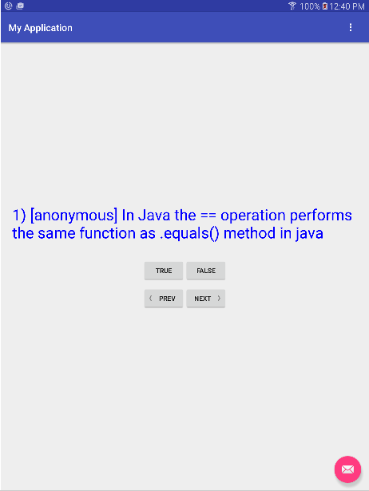

COMP 2601 Winter 2016
Ex 04 Android Pull Parser
© L.D. Nel 2016
Revisions -none yet
Description:
The purpose of this exercise is to have you familiarize yourself with the android XML pull parser. This is an XML parser not found in non-android java. It is easy to use and will allow you to parse XML datafiles whenever an application needs to.
You need to demonstrate your exercise to the TA or Prof. before you leave the class to get credit for it. Marks: 2 or completion, 1 for partial progress, 0 for no show or no progress. (A mark of 1 can be upgraded to 2 is show us your completed work within one week of this exercise.)
Instructions:
Background:
In the previous exercise we manually parsed very "friendly" XML. Here we would like to parse XML that contains the full features of the XML specification, mostly allowing attributes in the tags and not requiring the tags to be nicely formatted, just valid. Again, if necessary review the basics of XML at this W3 schools link before coming to the exercise. Android provides a class XmlPullParser intended to make XML parsing straight-forward. Vogella provides a short tutorial introduction to the XmlPullParser here.
Demo Code
Open and run the project in the demo_code folder. Like the previous exercise, it creates an app that lets you answer true-false exam questions by pressing the "True" or "False" buttons. You can move from question to question by pressing the "Next" and "Previous" buttons. Each time you answer a question a toast pops up to tell you if you answered correctly or not. The application screen should look something like this:

Observe that the demo code currently opens a bufferedReader on the datafile res/raw/comp2601exam.xml and then calls the static method Exam.pullParseFrom(BufferedReader)to parse the data and create the exam questions. However all the pullParseFrom method currently does is return the Question class's example set. For this exercise we are going to replace the code in the pullParseFrom(BufferedReader) method to actually parse the datafile using the XmlPullParser class.
Problem 1)
For this problem set up an instance of the XmlPullParser within the Exam class's pullParseFrom() static method.
The code structure could be as follows. Notice it still just returns the example set of questions.
public static ArrayList pullParseFrom(BufferedReader reader){
ArrayList questions = Question.exampleSet1(); //for now
// Get our factory and create a PullParser
XmlPullParserFactory factory = null;
try {
factory = XmlPullParserFactory.newInstance();
XmlPullParser xpp = factory.newPullParser();
xpp.setInput(reader); // set input file for parser
int eventType = xpp.getEventType(); // get initial eventType
// Loop through pull events until we reach END_DOCUMENT
while (eventType != XmlPullParser.END_DOCUMENT) {
// handle the xml tags encountered
switch (eventType) {
case XmlPullParser.START_TAG: //XML opening tags
//to do
break;
case XmlPullParser.TEXT:
//to do
break;
case XmlPullParser.END_TAG: //XML closing tags
//to do
break;
default:
break;
}
//iterate
eventType = xpp.next();
}
} catch (XmlPullParserException e) {
e.printStackTrace();
} catch (java.io.IOException e) {
e.printStackTrace();
}
return questions;
}
Now investigate the kind of get methods available for the xpp object. For example xpp.getName() should return the name of the tag. xpp.getText() should return any text (between XML tags) collected. Add what code is necessary in the switch statement so that you can print the names of tags and text collected to the logcat terminal. Your output might look as follows:
I/Exam: START_TAG: exam
I/Exam: TEXT:
I/Exam: START_TAG: question
I/Exam: TEXT:
I/Exam: START_TAG: question_text
I/Exam: TEXT:
In Java the == operation performs the same function as .equals() method in java
I/Exam: END_TAG: question_text
I/Exam: TEXT:
I/Exam: START_TAG: answer
I/Exam: TEXT: false
I/Exam: END_TAG: answer
I/Exam: TEXT:
I/Exam: END_TAG: question
...
Next do the same for attributes and see what get methods are available to collect attributes associated with the tags. Output the attribute values to the logcat terminal as well.
Problem 2)
Now comes the important part. Use the information discovered in problem 1 to parse the file and create an ArrayList<Question> of the question objects represented in the file. Return those questions instead of the sample set at the end of the pullParseFrom method.
Run the app. You should now see the questions from the XML file presented to the viewer.
Congratulation, you should now be able to easily parse XML data files whenever necessary.
Problem 3)
Make up a representative XML exam file and answer key that demonstrates what you plan to use for Assignment #1. Add those files to as a raw resource to the app. You don't have parse it now, but we want to see what you have in mind for assignment #1 (it might help shape our future exercises).
When you have completed these problems demonstrate your code to the TA or Prof. to get credit for the tutorial.Â
Optional)
Notice the demo code, and probably your answer code, again forgets which question it was on when you rotate the device between landscape and portait orientation. But notice also that each time you rotate it re-parses the datafile.
Can you modify the code so that not only the current question is remembered but the file is not re-parsed each time.